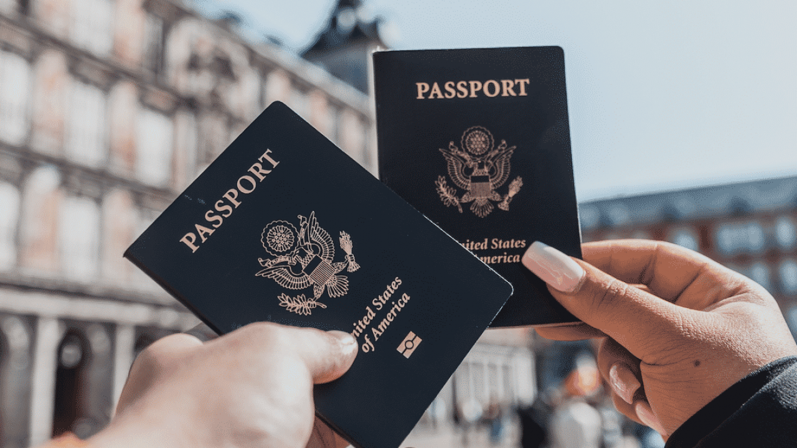

TIPS FOR FORIEGN TRAVELLERS
The COVID‑19 pandemic, also known as the coronavirus pandemic, is an ongoing global pandemic of coronavirus disease 2019 (COVID‑19), caused by severe acute respiratory syndrome coronavirus 2 (SARS‑CoV‑2).
The outbreak was first identified in December 2019 in Wuhan, China.
The World Health Organization declared the outbreak a Public Health Emergency of International Concern on 30 January 2020 and a pandemic on 11 March
The World Health Organization declared the outbreak a Public Health Emergency of International Concern on 30 January 2020 and a pandemic on 11 March.
As of 20 August 2020, more than 22.5 million cases of COVID‑19 have been reported in more than 188 countries and territories, resulting in more than 789,000 deaths;
more than 14.3 million people have recovered.
Therefore Sri lankan Government requires evrry travellers to minimum waer a face mask

VISA FOR SRILANKA
Unlike many other Asian countries, Sri Lanka doesn’t offer a visa on arrival. However, you can apply for an electronic visa or eVisa.
An eVisa is a double entry visa for 30 days, which is usually enough for most of the travelers.

THE BEST WAY TO TRAVEL INTERNALLY IS BY TRAIN
Picture this – you’re sitting in a cute train coach and everywhere you look, you see tea estates, forests, waterfalls, hills, monkeys.. and maybe even an elephant if you’re lucky.
From time to time, you can walk around and even sit by the door and get lost in the beauty
This is why many say that a train ride in Sri Lanka’s hill country is perhaps the most beautiful train journey in the world!
WHERE TO GO IN SRI LANKA
the whole country is divided into four zones the beaches, the hill country, the forest and historical places
we suggest every part of the country is pretty but according to the feedbacks more tourists suggest that
the middle part of the country makes them fall in love with sri Lanka